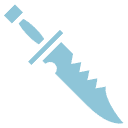
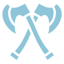

问剑榜
SEASON VII · CELESTIAL RANKING
问剑积分
秘境贡献
山河异闻
ESC

祁霜
91,284
02

商陆
96,731
01
游弋
88,406
03
TOP WAYFARERS
04
柯渡
听雨剑庐 · 黑潮渡口
84,219
+2
05
弥星
天枢院 · 镜湖星台
80,775
+1
06
迟野
昼夜山房 · 锈环古道
78,931
-1
07
洛砂
无归灯楼 · 永夜裂谷
76,548
+4
08
闻烬
天枢院 · 碎星云海
73,486
0
09
赫连秋
天枢院 · 赤霄遗址
71,044
+3
10
钟逆
灰鲸工坊 · 寒渊暗境
69,388
-2
我的排名
17
林霁
天枢院 · 本周上升 6 位
64,912
Q / E
切换榜单
ESC
返回